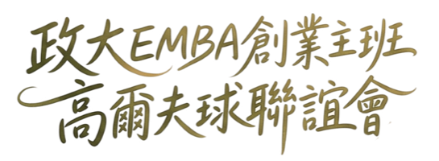

會員檢視免登入;總幹事登入後可編輯賽務資料。

改球場名稱，所有引用該球場的場次自動同步顯示。
來源:共用「會員名冊」(同 golf-fin);點開看完整資料。出生年/期初差點/幹部等判定欄位待補。
以下為賽務判定欄位(會員名冊沒有，在此補)
出席但總桿留白＝未完賽(DNF,仍算出席、不列排名)。
每洞點選簽到者(限當天出席);上限:PAR ON每人≤2洞、黑白切每人≤2洞(超過不能存)。
單場臨時獎(遠距獎/贊助商獎…);不列入年度預設。